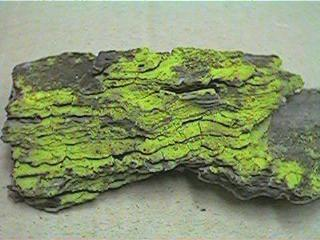
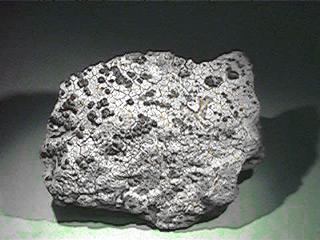
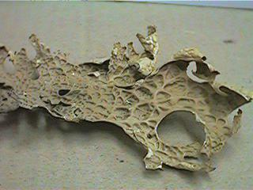
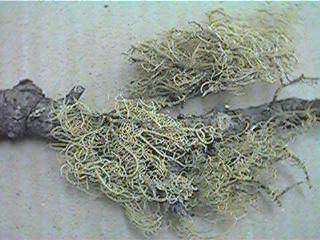
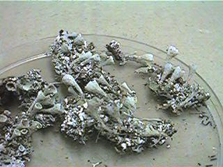
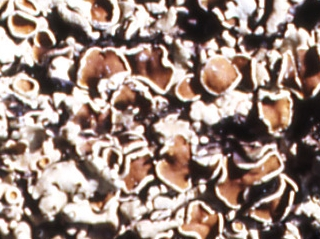

| Córtex superior | Plecténquima fúngico denso Pigmentos no fotosintéticos |
| Capa algal | Plecténquima fúngico laxo y células algales |
| Médula | Plecténquima fúngico laxo muy aireado
Sustancias liquénicas cristalizadas Es la capa más gruesa |
| Córtex inferior | Plecténquima fúngico denso |
| Biotipos de estructura generalmente homómera | |
|
|
|
 |
| Biotipos de estructura generalmente heterómera | |
|
 |
|
 |
|
 |
|
 |
| Apotecio lecideíno | Apotecio lecanorino |
| Borde propio
(fúngico) |
Borde talino
(cortex + capa algal) |
 |
| Distancia a la autopista | Talo de Parmelia | hojas de remolacha | hojas de maíz |
| 8 m | 26 | 51 | |
| 500 m | 90 | 18 | 22 |
| Ectomicorrizas (ectotróficas) 20% | Endomicorrizas (endotróficas) 80% |
| Micelio externo compacto: manto | Micelio externo laxo |
| Micelio septado | Micelio no septado |
| Hifas intercelulares sin haustorios: "red de Hartig" | Hifas intercelulares con haustorios (VA) |
| Micobiontes: | |
|
|
| Fotobiontes (familias más importantes): | |
|
|
3.- Importancia de las micorrizas.-
| Micorrizas | Suelo sin tratar | Suelo enriquecido en P |
| ausentes | 3,9 | 13,6 |
| presentes | 9,8 | 14,8 |